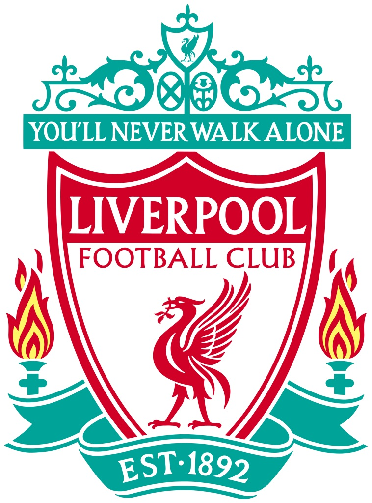

Real Madrid
Tiene en su palmares:
• Copa de Europa/UEFA Champions League : 14 (1955/56, 1956/57, 1957/58, 1958/59, 1959/60, 1965/66,
1997/98, 1999/00, 2001/02, 2013/14, 2015/16, 2016/17, 2017/18, 2021/22)
• Copa de la UEFA/UEFA Europa League : 2 (1984/85, 1985/86)
• Supercopa de la UEFA : 5 (2002, 2014, 2016, 2017, 2022)
Asociacion Calcio Milan
Tiene en su palmares:
• Copa de Europa/UEFA Champions League : 7 (1962/63, 1968/69, 1988/89, 1989/90, 1993/94, 2002/03, 2006/07)
• Copa de la UEFA/UEFA Europa League : 0
• Recopa de la UEFA : 2 (1967/68, 1972/73)
• Supercopa de la UEFA : 5 (1989, 1990, 1994, 2003, 2007)
Futbol Club Barcelona
Tienen en su palmares:
• Copa de Europa/UEFA Champions League : 5 (1991/92, 2005/06, 2008/09, 2010/11, 2014/15)
• Copa de la UEFA/UEFA Europa League : 0
• Recopa de la UEFA : 4 (1978/79, 1981/82, 1988/89, 1996/97)
• Supercopa de la UEFA : 5 (1992, 1997, 2009, 2011, 2015)

Liverpool Futbol Club
Tienen en su palmares:
• Copa de Europa/UEFA Champions League : 6 (1976/77, 1977/78, 1980/81, 1983/84, 2004/05, 2018/19)
• Copa de la UEFA/UEFA Europa League : 3 (1972/73, 1975/76, 2000/01)
• Supercopa de la UEFA : 4 (1977, 2001, 2005, 2019)
Bayern Munchen
Tienen en su palmares:
• Copa de Europa/UEFA Champions League : 6 (1973/74, 1974/75, 1975/76, 2000/01, 2012/13, 2019/20)
• Copa de la UEFA/UEFA Europa League : 1 (1995/96)
• Recopa de la UEFA : 1 (1966/67)
• Supercopa de la UEFA : 1 (2013)